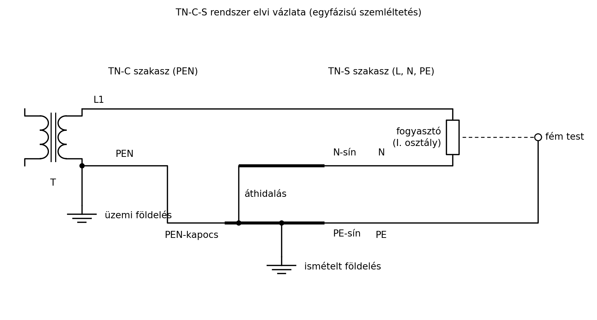

![Öt panel: TN-C, TN-S, TN-C-S, TT és IT. Mindegyiken transzformátor, F1 B16 kismegszakító az L1-ben, a TN-C-S-ben és a TT-ben Q2 FI-relé is, egy fogyasztó fém teste testzárlattal, a testet érintő ember és egy U_t voltmérő a test és a padló között. Vastag szürke szaggatott vonal jelöli a hibaáram útját: TN-ben fémes hurok a PEN-en vagy a PE-n, TT-ben a két földelőn és a talajon át, IT-ben a talajon és a többi fázis szigetelésén át. A panelek alatt a számok: TN 329 A, F1 old, U_t 57,5 V; TT 7,1 A, F1 nem old, Q2 old, U_t 213 V; IT 2,3 mA, nincs lekapcsolás, U_t 0,07 V. A hatodik mező jelmagyarázat és mintaadatok.](figures/img/ve075-1.png)
Statikus változat (mint a PDF-ben)
Egy lakásfelújítás során a villanyszerelő a mérőhelynél azt látja, hogy a bejövő elosztó kábel négy eres: három fázis és egy zöld-sárga, a végein világoskékkel jelölt vezető. Ez a vezető egyszerre látja el a nullavezető és a védővezető feladatát, ezért PEN-nek hívják. A fürdőszoba felújításakor azonban az áram-védőkapcsoló (FI-relé) és a külön védőérintkezős dugaljak miatt a védővezetőt és a nullavezetőt szét kell választani. Ha a szerelő rossz ponton köti össze a PE és N vezetőt, a védelmi rendszer nem működik, sőt életveszélyes helyzetet teremthet.
Ebben az alfejezetben a kisfeszültségű hálózati rendszerek földelési viszonyait és betűjelölését tanuljuk meg. A téma azért munkahelyi szempontból alapvető, mert a hálózati rendszer ismerete nélkül nem lehet eldönteni, hol szabad a védővezetőt és a nullavezetőt összekötni, hol kell áram-védőkapcsolót használni, és miért tilos a PEN vezetőt megszakítani.
A villamos berendezések áramütés elleni védelmét a hálózat földelési viszonyai határozzák meg. A hálózati rendszerek nemzetközi betűjelölése két vagy három betűből áll, és a betűk pontos sorrendje mondja meg, hogy a tápláló oldal és a fogyasztói testek hogyan viszonyulnak a földhöz.
Definíció. A kisfeszültségű hálózati rendszer betűjelölése: - Az első betű a tápláló rendszer (transzformátor vagy generátor) földelési viszonyát mutatja: - T = a tápláló rendszer egy pontja (általában a csillagpont) közvetlenül földelve, - I = a tápláló rendszer aktív részei nincsenek közvetlenül földelve, vagy nagy impedancián keresztül földeltek (izolált). - A második betű a fogyasztói testek (készülékburkolatok, fémházak) földelési viszonyát mutatja: - T = a test közvetlenül földelve, függetlenül a tápláló rendszer földelésétől, - N = a test a tápláló rendszer földelt pontjához (a nullaponthoz) közvetlenül, fémhálózati vezetővel kapcsolódik. - A harmadik betű csak TN rendszereknél létezik, és azt mutatja, hogy a földelt csillagponthoz menő nullavezető (N) és a védővezető (PE) közös vagy külön vezető-e: - C = közös (combined) PEN vezető, - S = külön (separated) PE és N vezető, - C-S = a táplálás egy szakaszán közös PEN, majd szétválasztott PE és N.
Az öt rendszer legfontosabb jellemzőit az alábbi táblázat veti össze. A sorok nem egymásra épülő rétegek, hanem öt egyenrangú megoldás; az oszlopok azokat a kérdéseket követik, amelyeket a szerelő a helyszínen eldönt: hová kötöm a testet, külön fut-e az N és a PE, mekkora hibaáramra számíthatok, és melyik készülék kapcsol le.
Az öt rendszer összehasonlítása
| Rendszer | Táp csillagpontja | Testek | N és PE | Vezetőszám 3f / 1f | Testzárlati áram nagyságrendje | Hibavédelem fő eszköze | Fő veszély | Tipikus előfordulás |
|---|---|---|---|---|---|---|---|---|
| TN-C | földelt | PEN-hez | közös PEN | 4 / 2 | 100–1000 A | túláramvédelem (FI nem alkalmazható, mert a PEN-en a FI nem tudja szétválasztani az üzemi és a hibaáramot) | PEN-szakadás | régi lakóépületek, közcélú hálózat |
| TN-S | földelt | PE-hez | külön a forrástól | 5 / 3 | 100–1000 A | túláramvédelem, FI kiegészítő | (kicsi) | saját transzformátoros ipari létesítmény |
| TN-C-S | földelt | PE-hez | PEN, majd külön | 4 → 5 / 2 → 3 | 100–1000 A | túláramvédelem + FI | PEN-szakadás a szétválasztás előtt | új hazai épületek |
| TT | földelt | saját földelőhöz | külön (N a hálózatról, PE a helyi földelőről) | 4 + helyi PE / 2 + helyi PE | néhány A | FI | nagy , a FI hiánya | ahol az engedélyes így csatlakoztat (ellenőrizendő) |
| IT | izolált vagy nagy impedancián földelt | földelőhöz | rendszerint nincs N | 3 (+ PE) | mA (első hiba) | szigetelésfigyelő + lekapcsolás a második hibánál | a második hiba | kórházi műtő, folyamatipar (ellenőrizendő) |
A táblázat áramértékei az alfejezet „Az öt rendszer összehasonlítása: a hibaáram útja” szakaszának mintaadataiból adódnak (ábra és táblázat ott) (TN: kb. 330 A, TT: kb. 7 A, IT: 2,3 mA); valós berendezésben a hurok adataitól függően ennél kisebbek vagy nagyobbak is lehetnek.
Fontos, hogy a betűjelölés nem a kábel ereinek számát, hanem a földelési viszonyokat írja le. A vezetékszám ezért nem azonosítja a rendszert: egy háromfázisú TN-C hálózat 4 vezetékes (L1, L2, L3, PEN), a TN-S 5 vezetékes, de egy TT-rendszerű háromfázisú csatlakozás is 4 vezetékkel (L1, L2, L3, N) érkezik, mert a PE ott a helyi földelőről jön; egyfázisú körben ugyanezek 2, illetve 3 eres kialakítások.
A TN rendszerekben a tápláló transzformátor csillagpontja közvetlenül földelve van, és a készülékek testjei egy fémhálózati vezetőn, a PEN vagy a PE vezetőn keresztül csatlakoznak ehhez a földelt ponthoz. A hibaáram ilyenkor fémes hurkon folyik vissza a transzformátorhoz, ezért általában elég nagy ahhoz, hogy a túláramvédelem (kismegszakító vagy biztosító) leoldjon.
A TN-C rendszerben a nullavezető és a védővezető feladatait egyetlen közös vezető, a PEN vezető látja el. A PEN vezető egyszerre üzemi áramot vezet (mint a nulla) és védővezetőként is működik, mert a készülékek testjei erre csatlakoznak.
Szabály. A TN-C rendszerben a PEN vezető: - zöld-sárga színű, de a végein világoskékkel meg kell jelölni, hogy ott nullavezetőként is szolgál; - nem szakítható meg, nem tartalmazhat kapcsolót vagy biztosítót, mert akkor a védővezetői funkció megszűnne; - minimális keresztmetszete külön követelmény, amelyet a hatályos szabvány és a hálózati engedélyes előírása határoz meg (ellenőrizendő: aktuális érték).
A TN-C rendszer előnye az egyszerűség és az alacsonyabb kábelköltség, mert négy vezetékkel (L1, L2, L3, PEN) kiépíthető. A hátránya az, hogy a PEN vezető szakadásakor a fázisfeszültség-terhelések aszimmetriája miatt a készülékek fémtestén életveszélyes feszültség jelenhet meg, és a rendszer érzékeny a védővezetőben folyó üzemi áram okozta zavarokra is.
A TN-S rendszerben a PE és az N vezető a transzformátortól kezdve végig külön van. A készülékek testjei a PE vezetőre csatlakoznak, amelyben normál üzemben nem folyik áram, így nem alakul ki rajta feszültségesés, és a zavarérzékenység is kisebb.
Szabály. A TN-S rendszerben: - a fázisvezetők L1, L2, L3; - a nullavezető N világoskék; - a védővezető PE zöld-sárga; - a PE és N vezetőt tilos bárhol a szétválasztás után összekötni.
A TN-S rendszer 5 vezetéket igényel (három fázis, N, PE), ezért drágább, de biztonságosabb. Valódi TN-S rendszer ott van, ahol a PE és az N már a transzformátortól külön fut – jellemzően saját transzformátorról táplált ipari létesítményekben. A közcélú hálózatról táplált új épületek TN-C-S rendszerűek: a szétválasztás utáni rész ötvezetékes (TN-S jellegű) kiépítésű.
A TN-C-S rendszer a két előbbi kombinációja: a tápláló oldal (általában a közcélú hálózat) TN-C, tehát PEN vezetővel érkezik, majd egy meghatározott ponton – például a mérőhely vagy a főelosztó bejövő oldalán – a PEN vezetőt szétválasztják PE és N vezetőre. A szétválasztás után a fogyasztói berendezés már TN-S-ként működik.
Szabály. A PEN vezető szétválasztásakor: - a PE és N sínt külön kell kialakítani; - a PE vezetőt a szétválasztásnál lehetőség szerint ismételten földelni kell; - a szétválasztás után a PE és N vezető semmilyen ponton nem köthető össze; - a szétválasztás előtti PEN vezetőt nem szabad megszakítani.
A következő elvi ábra a TN-C-S rendszert mutatja.

Az ábrán a transzformátor szekunder csillagpontja (a szekunder tekercs alsó kivezetése) közvetlenül földelve van, innen indul a PEN vezető, amely a szétválasztási pontig egyetlen vezetőként viszi az üzemi és a védő feladatot. A szétválasztási ponton a PEN a PE-sín PEN-kapcsára fut, innen áthidalás vezet az N-sínre; a PE-sínt helyben ismételten földeljük. A szétválasztás után az N (világoskék) és a PE (zöld-sárga) külön halad tovább. A fázisvezető L1 a felső ágon érkezik a fogyasztóhoz, a fogyasztó üzemi árama az N-en tér vissza, a fém teste a PE-re csatlakozik.
A TT rendszerben a tápláló transzformátor csillagpontja közvetlenül földelve van, de a fogyasztói testeket nem a csillagponthoz csatlakoztatjuk, hanem egy saját, független földelőhöz. A „T-T” jelentése tehát: mindkét oldal közvetlenül földelve, de a két földelő egymástól független.
Szabály. A TT rendszer előnye, hogy nincs PEN vezető, így a tápláló oldali PEN-szakadás veszélye nem érinti a fogyasztót. Hátránya, hogy a földzárlati áram a két földelő talajellenállásán keresztül folyik, ezért kicsi lehet, és a túláramvédelem nem feltétlenül old le elég gyorsan. Ezért a TT rendszerben az áram-védőkapcsoló (FI-relé) alkalmazása gyakorlatilag nélkülözhetetlen.
A TT rendszerben a védelem feltétele a földelési ellenállás és az áram-védőkapcsoló érzékenységének összehangolása. A testzárlatkor fellépő érintési feszültség ne haladja meg a váltakozó áramra megengedett, szabványos értéket (ellenőrizendő: aktuális határérték), mielőtt a FI-relé leold.
Összefüggés. TT rendszerben a FI-relé névleges kioldási áramával és a testföldelő ellenállásával:
ahol a megengedett érintési feszültség (tanulási érték: ).
Számítás.
Adott:
(300 mA-es FI-relé),
.
Keresett: a testföldelő legnagyobb megengedett ellenállása
.
Az eredmény nagyságrendileg helyes: egy 300 mA-es FI-reléhez legfeljebb körülbelül 167 Ω-os földelési ellenállás volna elméletileg elég, de a gyakorlatban a jó földelő ellenállása általában jóval kisebb (néhány ohm vagy néhány tíz ohm) a stabil működés érdekében. Ha a FI-relé érzékenyebb, például 30 mA-es, akkor a határ:
de ilyen nagy talajellenállás már bizonytalan, ezért a földelőt itt sem szabad csak a képlettel méretezni; a szabvány és a helyi adottságok miatt kisebb értéket kell elérni (ellenőrizendő).
Az IT rendszerben a tápláló rendszer aktív részei nincsenek közvetlenül földelve, vagy nagy impedancián keresztül földeltek. A készülékek testjei viszont egy vagy több földelőhöz csatlakoznak. Az „I” betű tehát a tápláló oldal izoláltságát, a „T” a testek közvetlen földelését jelzi.
Definíció. Az IT rendszerben az első földzárlati hiba esetén a hibaáram nagyon kicsi, mert a hurok nem záródik fémesen a transzformátorhoz, hanem a szigetelési ellenálláson és a szórt kapacitásokon át. Emiatt a berendezés első hibánál nem kapcsol le, hanem üzemelhet tovább, de a hibát jelezni kell.
A második földzárlat már veszélyes, mert az két különböző fázisú testzárlat esetén fémes zárlati hurkot hozhat létre, és nagy áram folyhat. Ezért az IT rendszerben szigetelésfigyelőt kell alkalmazni, és a második hiba után a védelmi lekapcsolást biztosítani kell.
Számítás.
Adott: a fázisfeszültség
,
az első hiba fémes testzárlat, a hálózat ép vezetőinek eredő szigetelési
ellenállása a földhöz
(a szórt kapacitást ebben a példában elhanyagoljuk).
Keresett: a földzárlati áram nagysága.
Ez az áram önmagában nem elég a kismegszakító leoldásához, és az emberi testen átfolyva sem okoz közvetlenül nagy kockázatot ebben a példában, de a szigetelésfigyelőnek jeleznie kell. Kiterjedt hálózatnál a szórt kapacitások miatt az első hiba árama ennél jóval nagyobb is lehet, ezért ez az eredmény nem általánosítható. A második hiba esetén az áram már a zárlati hurok impedanciájától függ, és jóval nagyobb lehet.
Számítás (második hiba). Két fogyasztó teste közös PE-vezetőre van kötve. Az első hiba az L1 vezető testzárlata az 1. fogyasztón, majd – a javítás előtt – a második az L2 vezető testzárlata a 2. fogyasztón. A zárlati hurok: L1 vezető (0,175 Ω) → 1. test → PE (0,175 Ω) → közös PE-sín → PE (0,175 Ω) → 2. test → L2 vezető (0,175 Ω), valamint a forrás kb. 0,1 Ω-os impedanciája:
A hurokban a vonali feszültség hajtja az áramot, és az 500 A bőven meghaladja a B16 kismegszakító A-es azonnali kioldási áramát: a túláramvédelem ugyanúgy lekapcsolhat, mint TN-rendszerben. Tanulási feltétel semleges vezető nélküli IT-rendszerre, közösen földelt testekkel:
ahol egy kör (fázisvezető és védővezető) hurokimpedanciája; a 2-es szorzó azt fejezi ki, hogy a második hibánál két ilyen kör van sorban. Külön földelt testeknél más (a TT-hez hasonló) feltétel érvényes (ellenőrizendő: MSZ HD 60364-4-41, IT-rendszerre vonatkozó szakasz). A kórházi orvosi IT-hálózatra külön szabványrész vonatkozik (ellenőrizendő: MSZ HD 60364-7-710); ezt a könyv nem tárgyalja.
Az eddigi szakaszok egyenként mutatták a rendszereket. Most ugyanazt a hibát vizsgáljuk mind az ötben: egy I. érintésvédelmi osztályú fogyasztó fűtőelemének fázis felőli vezetéke a fém házhoz ér (testzárlat), és valaki éppen megfogja a házat. Az ábrán minden panelen ugyanaz a végáramkör látható: F1 B16 kismegszakító, TT-ben és TN-C-S-ben Q2 30 mA-es FI-relé is, a fogyasztó fém teste, a testet érintő ember és egy voltmérő, amely az érintési feszültséget () mutatja a test és a padló között.
A mintaadatok (tanulási értékek, hideg, 20 °C-os vezetőellenállással): a táp oldali hurokimpedancia (ebből a PEN-szakasz ), a végáramkör 25 m hosszú, 2,5 mm²-es rézvezeték, így a fázisvezető és a védővezető ellenállása ; TT-ben , , IT-ben a többi fázis szigetelési ellenállása .
| Rendszer | / / | Lekapcsol? Melyik készülék | |
|---|---|---|---|
| TN-C | 329 A | igen, F1 (< 0,1 s); FI nem alkalmazható | 57,5 V (fő EPH-hoz), 107 V (távoli földhöz) |
| TN-S | 329 A | igen, F1 (< 0,1 s) | 57,5 V (fő EPH-hoz), 107 V (távoli földhöz) |
| TN-C-S | 329 A | igen, F1 és Q2 is (amelyik gyorsabb) | 57,5 V (fő EPH-hoz), 107 V (távoli földhöz) |
| TT | 7,1 A | F1 nem, csak a Q2 FI-relé | 213 V a lekapcsolásig |
| IT (1. hiba) | 2,3 mA | nem kapcsol le, a szigetelésfigyelő jelez | 0,07 V |
A számok tanulási értékek (ellenőrizendő: MSZ HD 60364-4-41); a valós hurokimpedanciát mérni kell. Hasonlítsd össze a TN és a TT sorát: ugyanaz a hiba az egyikben 329 A, a másikban 7,1 A – ezért a TN-ben elég a jól méretezett túláramvédelem, a TT-ben viszont FI nélkül nincs hibavédelem. Az Automatikus lekapcsolás: TN és TT, kioldási feltétel alfejezet ebből a hurokból vezeti le a kioldási feltételt.
A HTML-kiadásban a rendszer gombbal választható, és öt lépésben játszható le: ép állapot, testzárlat, a hibaáram útja, érintés, a védelem működése (melyik készülék old, vagy TT-ben a kismegszakító „NEM OLD” jelzése, IT-ben a szigetelésfigyelő lámpája). A TN-C-S rendszernél a szétválasztás előtti PEN-szakadás is kipróbálható: ekkor a testekre a fogyasztón át fázisfeszültség kerülhet, amit a FI-relé nem érzékel (számpélda: a „Mi történik PEN-szakadáskor? – számpélda” szakasz).
A magyarországi közcélú kisfeszültségű hálózat jellemzően TN-C vagy TN-C-S rendszerű. A szolgáltatói oldal általában TN-C, vagyis a transzformátor nullapontja földelve van, és a fogyasztóhoz négy vezeték (L1, L2, L3, PEN) érkezik. A fogyasztói berendezés a csatlakozási ponton vagy a mérőhelynél gyakran TN-C-S-re vált: a PEN vezetőt itt szétválasztják PE és N vezetőre, és a fogyasztói elosztó már ötvezetékes rendszerben épül.
Szabvány. A kisfeszültségű villamos berendezések védelmére vonatkozó magyar harmonizált szabvány az MSZ HD 60364 sorozat. A hálózati rendszerek betűjelölését és a berendezésre vonatkozó alapelveket az MSZ HD 60364-1 (ellenőrizendő: aktuális kiadás és pontos cím) írja le. Az áramütés elleni védelmet az MSZ HD 60364-4-41 (ellenőrizendő: aktuális kiadás) tartalmazza. A jelen alfejezetben megadott feszültséghatárok (pl. az érintési feszültség 50 V-os értéke) tanulási értéknek tekintendők; a kiviteli munkák során a hatályos kiadást és a hálózati engedélyes előírásait kell figyelembe venni.
Az épületeken belüli átalakítás során a legfontosabb szabály, hogy ha a régi TN-C rendszerű vezetékrendszert felújítják, a PEN vezetőt a megfelelő ponton szét kell választani, és attól kezdve a PE és N vezetőt külön kell vezetni. A régi „nullázás” kifejezésnek nagyjából a TN rendszer felel meg, a régi „védőföldelés” kifejezés pedig a TT rendszerhez áll közel; a mai szabványos terminológia ezeket a hálózati rendszer betűjelölésével írja le (lásd Alapvédelem, hibavédelem, kiegészítő védelem).
A rendszerváltás tipikus munkahelyi feladat: egy régi, TN-C rendszerben szerelt lakásban például a fürdőszoba vagy a konyha felújításakor a hálózatot TN-C-S-re kell alakítani ahhoz, hogy az áram-védőkapcsoló megbízhatóan működjön. Ilyenkor a PEN vezetőt a főelosztóban vagy a mérőhelyben szétválasztják, majd a fürdőszobai és konyhai köröket már ötvezetékes, külön PE és N vezetős szereléssel építik ki.
A szétválasztás fizikai kialakítását az alábbi szerelési nézet mutatja. Az 1 bejövő négyeres kábel L1–L3 erei a 2 háromsarkú főkapcsolóra futnak (a PEN-t kapcsolni tilos, ezért nincs negyedik pólus); a 3 PEN-vezető a 4 PE-sín PEN-kapcsára kerül. Az 5 N-sínt a testtől szigetelten rögzítjük, és a 6 áthidalás köti a PE-sínhez – ez a berendezés egyetlen PE–N kapcsolata. A 7 földelővezető a fő EPH-n át az ismételt földeléshez vezet, a 8 kimenő oldalon pedig már öt vezető indul.

Figyeld meg, hogy a PEN a PE-sínre érkezik, és onnan jut az N-sínre – fordítva nem: így az N-sín meglazult kötése nem szakíthatja meg a védővezetőt. A szétválasztás helyét és kivitelét a hálózati engedélyes előírása és a terv határozza meg (ellenőrizendő). A HTML-kiadásban a részekre mutatva megjelenik a szerepük.
A vezetékszám nem azonosítja a rendszert, ezért felméréskor rögzített sorrendben járunk el:
| Megfigyelés | Következtetés |
|---|---|
| PEN-kapocs és N–PE áthidalás a főelosztóban, onnan külön PE és N | TN-C-S |
| kéteres körök, az aljzatban az N és a védőérintkező áthidalva | TN-C maradvány („nullázás”) |
| helyi földelő, nincs PEN és áthidalás, nagy , FI a berendezés elején | TT |
| saját transzformátor, PE és N végig külön | TN-S |
| izolált táp, szigetelésfigyelő | IT |
Feladatok.
Megoldások.
Továbbvitt eredmény. A hálózati rendszer betűjele és a benne folyó hibaáram útja határozza meg az automatikus lekapcsolás feltételét. Ezt használjuk majd az Automatikus lekapcsolás: TN és TT, kioldási feltétel alfejezetben, ahol a összefüggést vezetjük le, valamint a Földelők és földelési ellenállás alfejezetben, ahol a földelőket és a földelési ellenállás mérését tárgyaljuk. A most tanult PEN, PE, N vezetők szerepét mindkét későbbi alfejezet felhasználja.
Egy régi, négylakásos társasház felújításakor a kivitelező a lépcsőházi elosztóban a régi TN-C rendszert úgy alakította át, hogy a PEN vezetőből a mérőhelynél leválasztott egy N vezetőt, a PE sínt pedig a szekrény fémvázára kötötte. A lakásokba már 5 vezeték ment, de a mester az egyik lakásban a konyha felújításakor a mosogatógép fémburkolatát a PE helyett a kék N vezetőre kötötte. Az áram-védőkapcsoló felszerelése után a gép bekapcsolásakor a FI-relé azonnal leoldott.
A FI helyesen működött: a gép üzemi árama részben a testen, a vízvezetéken és a PE-n át, a FI érzékelőjét megkerülve tért vissza, ezért a differenciaáram nem volt nulla. A helyes megoldás az volt, hogy a mosogatógép testét a PE sínre kötötték, az N vezető pedig csak az üzemi áram visszavezetését látja el. A hiba tanulsága: a test N-re kötése N-szakadáskor a testet fázisfeszültségre emeli, a FI kioldása pedig itt nem téves, hanem a hibát jelzi; a szétválasztás után a PE és az N összekötése tilos.
Hiba 1: A PEN vezető megszakítása.
Ha a PEN vezetőt kapcsolóval vagy biztosítóval megszakítják, a
védővezetői funkció megszűnik, és a lekapcsolt szakaszon a
fázisterhelések aszimmetriája miatt a fémtesteken életveszélyes
feszültség léphet fel. Helyes: a PEN vezetőt folyamatosan kell kötni, és
a szétválasztás előtt semmiképpen sem szabad megszakítani.
Hiba 2: PE és N összekötése a szétválasztás
után.
A TN-C-S rendszerben a szétválasztás után a védővezető és a nullavezető
ismételt összekötése miatt a FI-relé leold (helyesen, mert a PE-n üzemi
áram folyik), vagy a védelem hatástalanná válik. Helyes: a PE és N sínt
külön kell vezetni, és a szétválasztási ponton kívül nem szabad
összekötni őket.
Hiba 3: TT rendszerben FI-relé nélküli
védelem.
Ha a test földelése TT rendszerű, de nincs áram-védőkapcsoló, a
földzárlat árama a talajon át gyakran olyan kicsi, hogy a kismegszakító
nem old le, és a test folyamatosan veszélyes feszültség alatt marad.
Helyes: TT rendszerben mindig áram-védőkapcsolót kell alkalmazni, és a
földelési ellenállást az érzékenységhez kell méretezni.
Hiba 4: IT rendszerben a szigetelésfigyelő jelzésének
figyelmen kívül hagyása.
Az IT rendszerben az első földzárlat nem kapcsol le, de a második hiba
már életveszélyes lehet. Ha a jelzőberendezés visszajelzését nem veszik
komolyan, a berendezés veszélyes állapotban üzemel tovább. Helyes: az
első hiba jelzésekor a hibát mielőbb meg kell szüntetni, és a második
hiba esetén a lekapcsolást biztosítani kell.
Gyakorlás: ennek az alfejezetnek a kidolgozott példái, gyakorlatai és megoldással ellátott feladatai az Összefoglaló feladatgyűjtemény villanyszerelő tanulóknak című kötet 21.2 szakaszában találhatók.
A kisfeszültségű hálózati rendszerek betűjelölésének első betűje a tápláló rendszer földelését (T: földelt, I: izolált vagy nagy impedancián földelt), második betűje a testek földelését (T: közvetlenül földelt, N: a tápláló rendszer földelt pontjához kötött), harmadik betűje pedig TN rendszernél a PE és N viszonyát (C: közös PEN, S: külön) mutatja. A TN-C rendszerben a PEN vezető egyesíti a nulla és a védővezető feladatát; a TN-S rendszerben külön PE és N vezető fut; a TN-C-S rendszer a PEN szétválasztásával hoz létre fogyasztói oldalán TN-S rendszert. A TT rendszerben a testek saját földelőhöz csatlakoznak, ezért a FI-relé alkalmazása nélkülözhetetlen, és az feltételt kell betartani. Az IT rendszer első földzárlatnál nem kapcsol le, de a második hiba veszélyes, ezért szigetelésfigyelőt kell alkalmazni. Továbbvitt eredmény. A hálózati rendszer és a hibaáram útjának ismerete közvetlenül szükséges az Automatikus lekapcsolás: TN és TT, kioldási feltétel alfejezethez, ahol a feltételt vezetjük le, és a Földelők és földelési ellenállás alfejezethez, ahol a földelőket méretezzük és mérjük. A PEN vezetőt tilos megszakítani, és a szétválasztás után a PE és N vezetőt tilos összekötni.
Az alfejezetben hivatkozott szabványok: MSZ HD 60364-1 és MSZ HD 60364-4-41. A betűjelölések és a rendszerek klasszikus villamos biztonsági ismeretnek tekinthetők, de a pontos kiadásokat, a PEN vezető minimális keresztmetszetét, az 50 V-os érintési feszültség határértéket és a vezetőszínek aktuális előírásait a kiadás előtt ellenőrizni kell a hatályos MSZ EN / MSZ HD szabványokban és a hazai hálózati engedélyes előírásaiban. A hálózati rendszerek váltásával kapcsolatos gyakorlati követelményeket (pl. a PEN szétválasztás pontos helye, ismételt földelés szükségessége) szintén ellenőrizni kell a helyi elosztói feltételek alapján.